Helium Cooling Reserve and Bi-Phase Line Sizing
For this project, I created a Python model to size the bi-phase helium line for the FCC-ee cryomodules at CERN. The project goals were to calculate the liquid volume needed during an interruption in the helium supply, determine the space required for returning gas, and account for the liquid-level measurement requirements.
The model was used to compare different pipe diameters and calculate the time before the liquid level reached the first cavity connection. These results were then compared with the available volume in the cryomodule CAD model.
Background and Project Goals
FCC-ee is a proposed particle accelerator at CERN which would use superconducting radiofrequency (RF) cavities to accelerate particles. The cavities require very low temperatures to operate and are housed in helium tanks inside insulated assemblies called cryomodules.
The bi-phase line is the pipe above the cavities which contains both liquid helium and helium gas. The two phases give the line its name. The pipe connects to the helium tanks through short vertical tubes called risers. As heat enters the helium, some of the liquid boils and the vapour returns through the outlet.
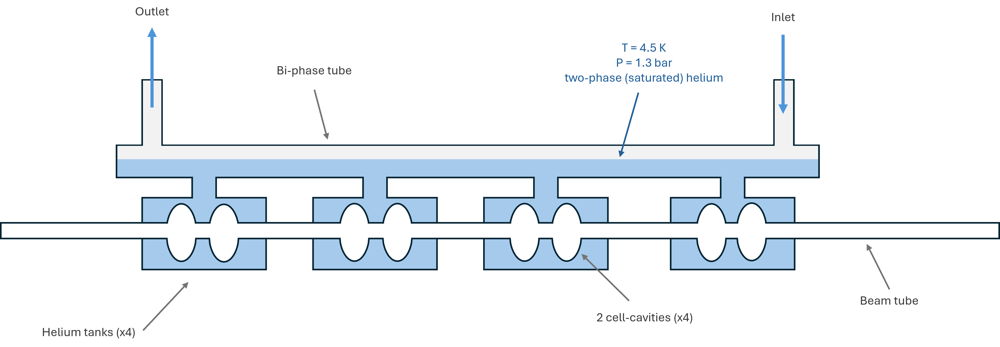
If a valve closes or the helium supply is interrupted, the remaining liquid continues to boil as it absorbs heat from the cryomodule. The line must contain enough liquid to provide at least 10 minutes of cooling. If the cavities become too warm, they lose superconductivity, interrupting accelerator operation until the required cooling and operating conditions are restored. For the tube calculation, the limiting condition is when the falling liquid level starts to expose the first riser connection to vapour.
The pipe diameter must allow for both the liquid storage and the space needed for gas to flow out. Since the cryomodule is installed on a slope, the liquid depth changes along the pipe and one riser connection becomes exposed before the others.
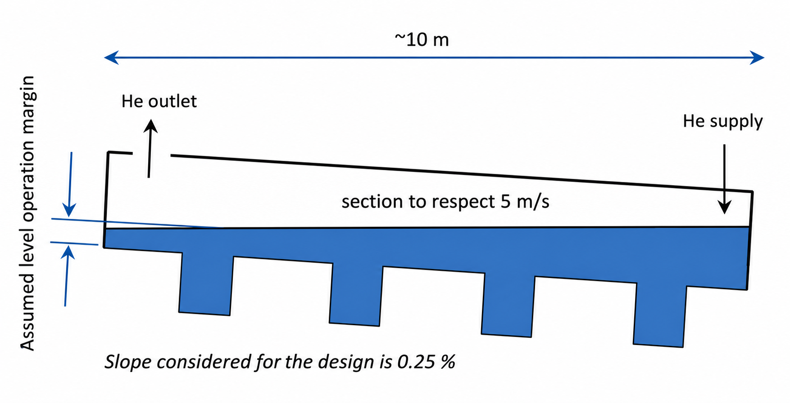
My Contribution
I built the Python model from scratch with guidance from Krzysztof Brodzinski, a senior cryogenic engineer who created the below specifications for the project. My contributions included implementing the calculations, comparing different diameters, and using the cryomodule computer-aided design (CAD) model to assess the available liquid volume.
- Calculated the liquid depth and cross-sectional area along the sloped pipe
- Calculated the space required for returning vapour and the time before the first riser is exposed
- Compared the required liquid volume with the volume available in the tube and risers using CAD
The results were used to define the liquid-volume requirement given to the RF design team.
Specifications
The following specifications were created by Krzysztof Brodzinski and were used as the design requirements for the model. The specifications are based off past cryomodule design and operation experience.
| Requirement | Target and purpose |
|---|---|
| Cooling reserve | At least 10 minutes, with 15 minutes preferred, following a supply interruption. The tube study uses first-riser exposure as its limiting threshold. |
| Vapour speed | No more than 5 m/s in normal two-phase operation, to limit disturbances to liquid-level control, vibration and liquid carry-over. Accidental and single-phase transient cases are outside this operating limit. |
| Level measurement | At least 50 mm of operating-level variation, with about 100 mm preferred, to accommodate the gauge's uncertainty and limited resolution. |
| Geometry and gas escape | Account for the tunnel slope, place the outlet at the higher end, and preserve a gas escape path from the tanks, including during an incident. |
Assumptions and Scope
- Study case: one cryomodule containing four 400 MHz cavities, with helium at 4.5 K (about −269 °C). The frequency refers to the RF cavities.
- Geometry: a straight, circular tube, 9 m long, inclined by 0.0025 rad (approximately 0.25%). The initial diameter is 150 mm.
- Normal liquid level: 50% filling at the centre of the pipe, where the level gauge is located. The liquid surface was assumed to remain level while the pipe follows the tunnel slope.
- Heat load: static and dynamic heat loads were assumed constant, with a margin of 1.5 applied to their sum. Static heat enters even when the cavities are not operating; dynamic heat is generated during RF operation.
- Flow and properties: helium properties were kept constant at the boiling condition. The highest vapour speed was assumed to occur at either end of the pipe, with the supply at the lower end and the outlet at the higher end.
To simplify the calculation, the Python model only includes the circular tube. CAD was used to estimate the volumes in the risers and helium tanks due to their more complex geometry. The model does not simulate changes in heat load or pressure during an interruption. The liquid-level control response and gas escape during an incident also require further assessment.
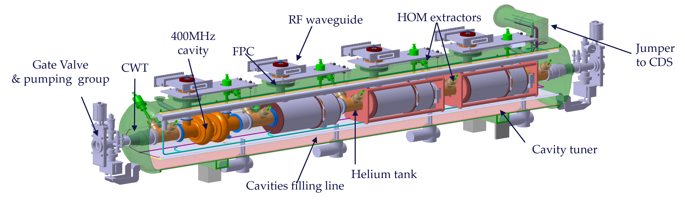
Calculation Method
- Liquid-height profile: calculates the liquid depth at each position from the centre-gauge level and tunnel slope.
- Liquid volume: converts the liquid depth into a filled cross-sectional area, then integrates the area along the pipe length.
- Usable liquid: subtracts the volume remaining when the first riser is exposed from the initial liquid volume.
- Time to first-riser exposure: uses the heat load and helium properties to calculate how long the usable liquid takes to boil away.
- Diameter comparison: repeats the calculation for different pipe sizes and calculates the space needed for vapour flow. The required liquid volume was then compared with the CAD geometry.
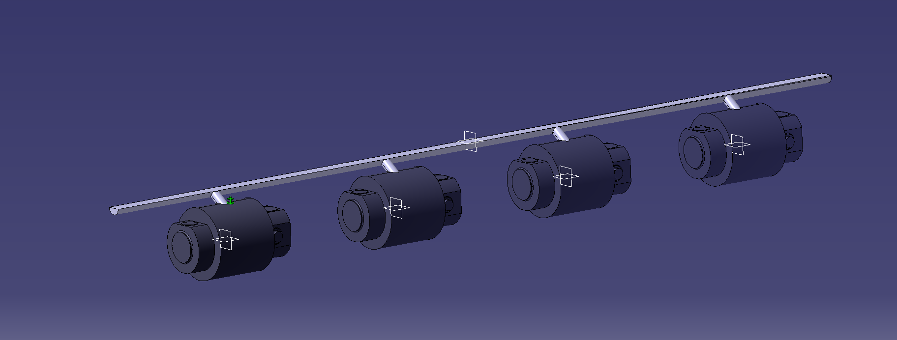
Results
The 150 mm tube had a calculated cooling reserve of approximately 3 minutes, below the required minimum of 10 minutes. Under the assumed operating conditions, about 75 litres of liquid could boil away before the first riser connection was exposed.
The results are preliminary estimates and include the 1.5 heat-load margin. Increasing the pipe diameter allows for a larger liquid volume. However, the selected geometry must also fit inside the cryomodule and meet the vapour-speed and liquid-level requirements.
CAD Volume Comparison
CAD was used to measure the liquid volume in the tube and risers at the nominal level. The combined volume was approximately 95 litres, compared with the roughly 260 litres required for 10 minutes. This includes the risers, while the 75-litre usable volume calculated above only includes the tube.
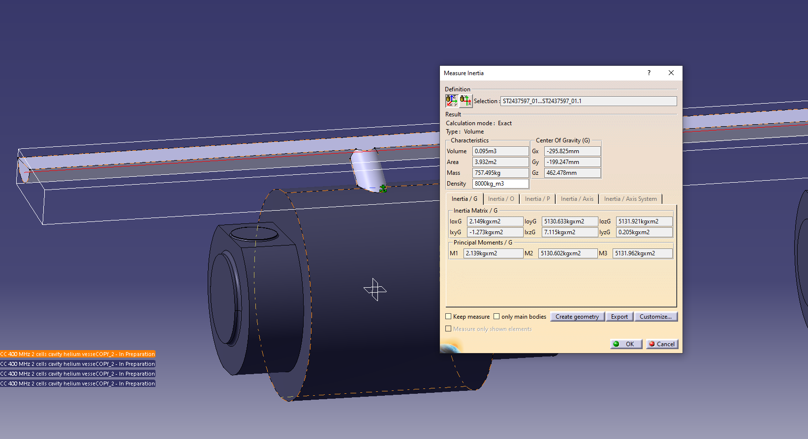
The additional liquid volume needed is represented by the block in the figure below. This volume could be added by increasing the tube diameter or expanding certain sections of the line. The final design would need to maintain the required vapour flow path and fit within the cryomodule.
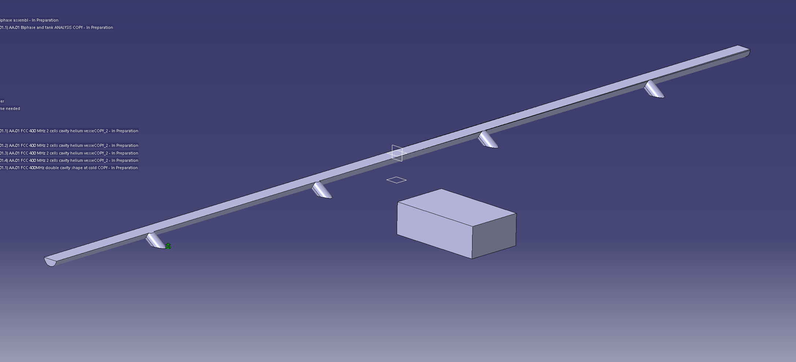
Project Outcome
The calculations were used to define the liquid-volume requirements given by the cryogenic team to the RF design team. The work identified the need for additional helium storage in the cryomodule. The geometry changes have not been implemented yet, but the volume requirement is now being considered in the design.
Model Checks and Limitations
The calculated liquid-volume requirement was compared with the available volume in the CAD model. This comparison showed that the proposed geometry did not contain enough liquid for the required cooling reserve.
The calculations were checked by engineering colleagues. The predicted times have not yet been validated against experimental measurements. CAD was used to assess the available liquid volume; it does not validate the predicted time to reach the limiting level.
Further work would include modelling the changes in heat load and helium conditions during a supply interruption.
Technical Details
The equations and code used for the calculations can be found below, along with figures showing the liquid levels and CAD geometry. The variables and units are defined after each equation. Each figure can be opened at full size.
Equations, Operating Cases and CAD Volumes
1. Geometry and Reference Level
The reference point was placed at the centre of the 9 m tube, where the liquid-level gauge is located. The nominal liquid depth was set to half the pipe diameter, measured from the pipe wall. For a 150 mm diameter, this gives a depth of 75 mm at the gauge.
D: internal diameter [m]; R: radius [m]; L: tube length [m]; xref: gauge position [m]; href: liquid depth at the gauge [m].
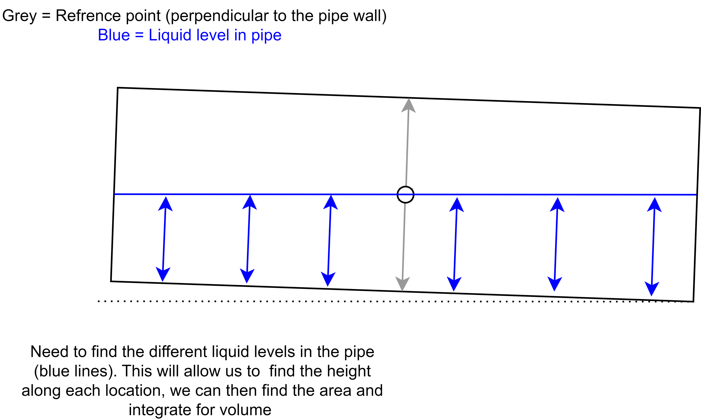
The position x is measured from the lower end towards the higher end of the pipe. The local liquid depth is calculated from the reference depth and the height change caused by the slope:
h(x): local liquid depth [m]; x: position along the tube [m]; α: slope angle [rad].
For a slope of 0.0025 rad over 9 m, the height difference between the ends is approximately 22.5 mm. With the liquid depth set to 75 mm at the centre, the lower and higher ends have depths of approximately 86.25 mm and 63.75 mm respectively.
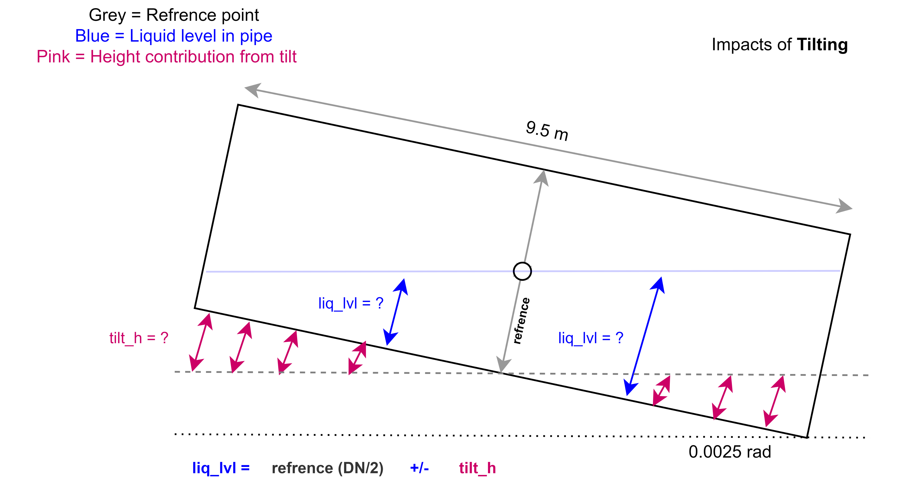
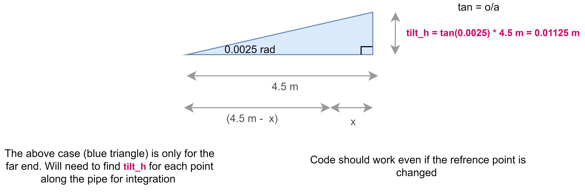
2. Cross-Sectional Area
Once the liquid depth is known, the filled cross-sectional area can be calculated using circular-segment geometry. The angle θ describes the filled segment. Its area is found by subtracting the triangular area from the circular sector.
Aliquid = ½ R2 (θ − sin θ)
θ: segment angle [rad]; h: liquid depth [m]; Aliquid: filled cross-sectional area [m²]. cos−1 means inverse cosine.
The area is zero where the liquid depth is zero or negative, and πR2 where the pipe is full. At half depth, the formula gives half the total circular area.
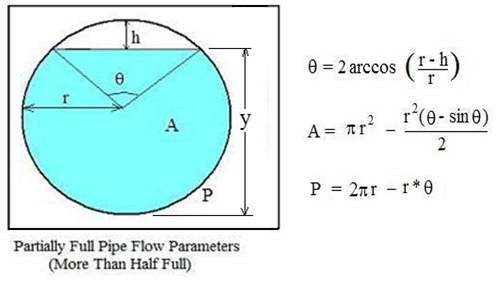
def segment_area_from_height(h, R):
if h <= 0:
return 0
elif h >= 2 * R:
return math.pi * R**2
else:
theta = 2 * math.acos((R - h) / R)
return 0.5 * R**2 * (theta - math.sin(theta))3. Liquid Volume and Operating Levels
The liquid volume is calculated by integrating the filled cross-sectional area along the pipe length. This adds together the volume of each thin section of liquid. The usable volume is then found by subtracting the liquid remaining at the dry threshold from the nominal volume.
ΔVusable = Vnominal − Vthreshold
V: liquid volume [m³]; Vthreshold: liquid remaining in the tube when the first riser is exposed [m³]; ΔVusable: volume that can boil away before that threshold [m³]. One cubic metre equals 1,000 litres.
Nominal Operation
The 150 mm tube contains approximately 79.5 litres at the nominal level. The figure below shows the liquid depths and cross-sections at both ends and at the centre of the pipe.
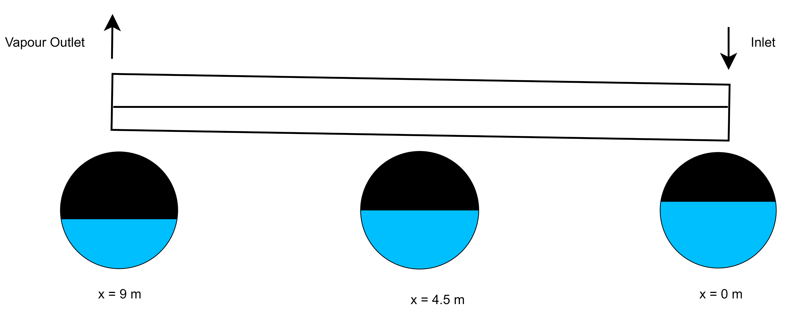
First-Riser Exposure
The dry threshold is calculated by setting the liquid depth to zero at the first riser connection, approximately 7.725 m from the lower end. This gives a liquid depth of approximately 8.1 mm at the centre gauge. About 4.2 litres remain in the tube at this condition, leaving approximately 75 litres available to boil away before the connection is exposed.
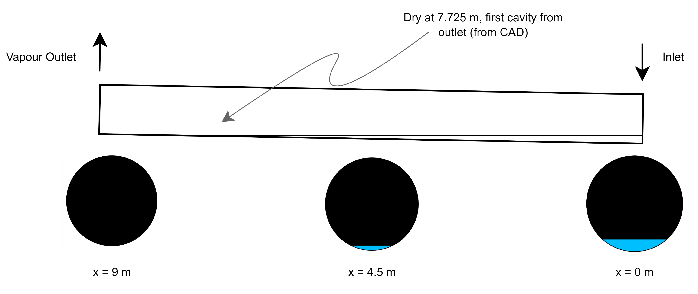
# Numerically integrate the local liquid area.
volume, _ = quad(local_area, 0, L)
# Only the volume above the limiting inventory is usable.
volume_delta = volume_nominal - volume_dry4. Heat Load and Time to First-Riser Exposure
The total heat load includes the static heat entering the cold equipment and the dynamic heat generated during RF operation. A margin of 1.5 was applied to both, adding a 50% allowance to the total.
QCM: total modelled heat load [W]; fmargin: margin factor [dimensionless]; N: number of cavities; q: heat load per cavity [W].
| Input | Study value |
|---|---|
| Static heat per cavity | 32.83 W |
| Dynamic heat per cavity | 128.1 W |
| Cavities / margin | 4 / 1.5 |
| Total modelled heat load | 965.58 W, approximately 966 W |
| Latent heat at the study condition | Approximately 18.84 kJ/kg |
Latent heat is the energy required to turn one kilogram of liquid into vapour. The boiling mass flow rate is found by dividing the heat load by the latent heat. Helium properties were obtained using HEPAK, a helium-property calculation package.
ṁboil: liquid boiling rate [kg/s], called m_dot_l in the script; Lv: latent heat [J/kg]; ρliquid: liquid density [kg/m³]; t: time [s]. Divide seconds by 60 to obtain minutes.
Using a heat load of 965.58 W and a latent heat of 18,839.77 J/kg gives a boiling mass flow rate of approximately 0.0513 kg/s. The usable liquid volume is converted into mass using the liquid density, then divided by the boiling rate to obtain the time. For a target of 10 minutes, approximately 260 litres of usable liquid are required.
# Calculation used in the diameter sweep.
Q_cm = margin * (static_heat_load + dyn_heat_load) * cav_cm
m_dot_l = Q_cm / latent_heat
m_i = volume_delta[i] * rho_l
t_i = m_i / m_dot_l
t_i = t_i / 605. Vapour Flow and Liquid-Level Limit
During normal operation, the vapour flow includes helium boiled by the heat load and the vapour produced during expansion through the Joule–Thomson valve. The valve reduces the pressure of the incoming helium, causing some of it to turn into vapour. This is called flash.
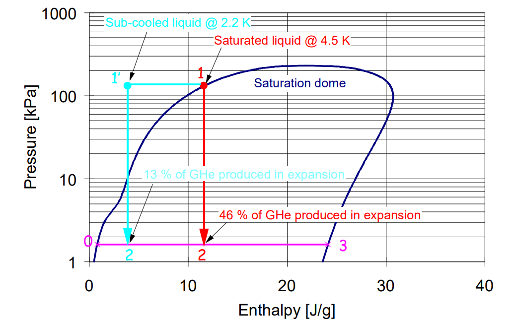
The required vapour area is calculated from the mass flow rate, vapour density and maximum allowed speed of 5 m/s. This follows from the relation mass flow = density × speed × area. Subtracting the required vapour area from the total pipe area gives the maximum liquid area.
ṁreturn: returning vapour mass flow [kg/s]; ṁflash: inlet flash-vapour flow [kg/s]; ρvapour: vapour density [kg/m³]; umax: speed limit, 5 m/s; A: area [m²].
The maximum liquid area is then converted back into a liquid depth. Two cases were considered, with the highest vapour speed at either the inlet or outlet. The figure below shows the inlet case, where very little area remains for vapour at the lower end. This liquid level should be avoided during operation to reduce the risk of liquid helium droplets being carried into the vapour return, unstable liquid-level control, and piping vibration.
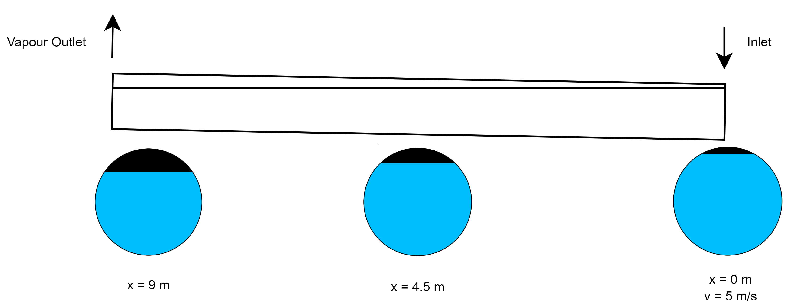